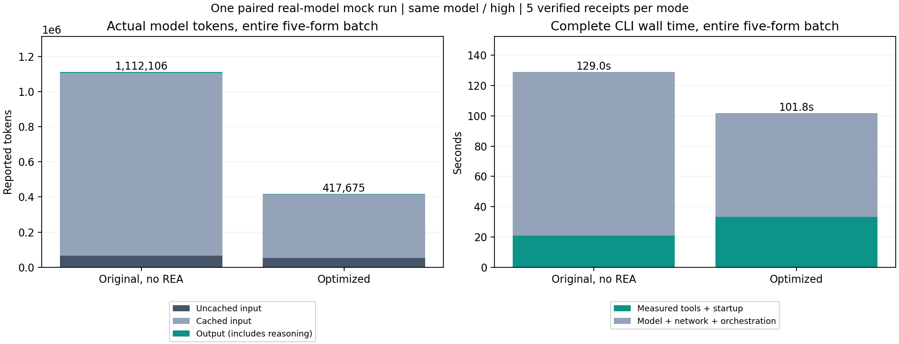
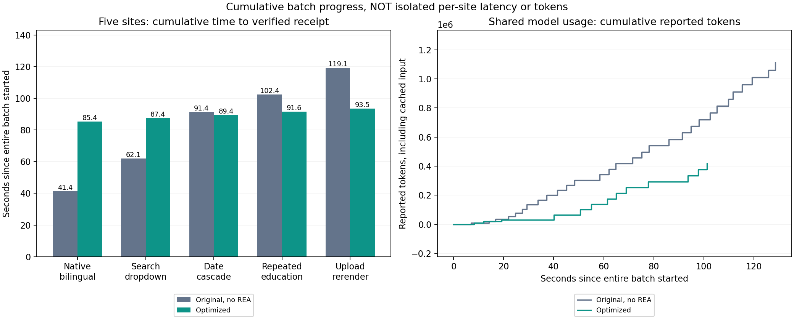

本次配对实测：优化后流程总 token 减少 62.4%，完整耗时 减少 21.1%。两轮各验证 5/5 份回执。

| 流程 | 模型 | 状态 | 完整耗时 | 批次核验完成 | 输入 token | 其中缓存输入 | 输出 token | 其中推理输出 | 总 token | 回执 |
|---|---|---|---|---|---|---|---|---|---|---|
| 原无 REA 流程 | gpt-5.6-sol / high | 完成 | 129.04 秒 | 125.69 秒 | 1,106,791 | 1,040,640 | 5,315 | 1,601 | 1,112,106 | 5/5 |
| 优化后流程 | gpt-5.6-sol / high | 完成 | 101.79 秒 | 97.67 秒 | 414,032 | 360,960 | 3,643 | 1,216 | 417,675 | 5/5 |
最初四图按 5 类网站 × cold/warm 展示脚本耗时和交互文本 token。cold/warm 指语义结构缓存未命中/预热，并非模型缓存计费。本报告新增真实模型整批 usage 和完整时间，恢复五网站累计进度，但尚未隔离测量单站 cold/warm 的完整模型成本；表中的未测项没有用早期代理指标或均摊数替代。
最初四图：脚本与交互文本评测 · 旧增强 vs 优化后 · 原无 REA vs 优化后
后续逐站独立测量见：20 格 cold/warm 真实模型测试。本页仍只描述其原始整批测量，完整度以对应报告为准。
整批图每根柱子汇总五个网站；下方五网站图表示从同一批次启动到各站回执核验完成的累计时间，包含前置准备和其他网站等待，不是单站独立耗时。累计 token 是回执时 CLI 已报告的全批共享 usage，不是分配给该站的消耗，也不能把五行相加。模型可能在工具调用后才报告后续 usage，因此各站累计值不会等于最终总量。批量准备可能延迟首份回执，同时缩短整批完成时间。

| 网站 | 流程 | 批次启动至本站回执 | 此时已报告累计 token | 回执及台账 | 独立单站 time/token | 单站 cold/warm 全链路 |
|---|---|---|---|---|---|---|
| native-bilingual | 原无 REA 流程 | 41.36 秒 | 200,734 | 通过 | 未隔离测量 | 未测 |
| search-dropdown | 原无 REA 流程 | 62.09 秒 | 341,759 | 通过 | 未隔离测量 | 未测 |
| date-cascade | 原无 REA 流程 | 91.37 秒 | 584,945 | 通过 | 未隔离测量 | 未测 |
| repeated-education | 原无 REA 流程 | 102.42 秒 | 720,634 | 通过 | 未隔离测量 | 未测 |
| upload-rerender | 原无 REA 流程 | 119.13 秒 | 960,731 | 通过 | 未隔离测量 | 未测 |
| native-bilingual | 优化后流程 | 85.37 秒 | 293,386 | 通过 | 未隔离测量 | 未测 |
| search-dropdown | 优化后流程 | 87.45 秒 | 293,386 | 通过 | 未隔离测量 | 未测 |
| date-cascade | 优化后流程 | 89.38 秒 | 293,386 | 通过 | 未隔离测量 | 未测 |
| repeated-education | 优化后流程 | 91.58 秒 | 293,386 | 通过 | 未隔离测量 | 未测 |
| upload-rerender | 优化后流程 | 93.53 秒 | 293,386 | 通过 | 未隔离测量 | 未测 |
两轮都是本次重新执行，使用相同 gpt-5.6-sol/high、合成资料、五类表单、备份浏览器执行器与验收条件。原无 REA 轮使用 00aaeb8fb775 的原输入执行器，Skill 固定在 REA 增强前 ef9b403003ec，模型判断全部字段来源与控件路径；该轮不暴露 REA 或自动映射工具；优化后合并普通准备、上传重扫和例外批处理，文档只加载一次，REA 按失败/未知绑定触发。模型请求 30 → 13 次；真实 REA 调用 0 → 0 次，耗时 0.00 → 0.00 秒。保留五份当前字段读回、草稿验证、审核版本哈希、逐角色提交门禁、服务端回执与 Excel 读回。 优化后若同样零次 REA，本次改善来自程序化准备和减少往返，不能证明 REA 诊断的独立收益。历史无 REA 轮有指令截断，不混入此重新配对比较。 实报未缓存输入 66,151 → 53,072，输出 5,315 → 3,643；其中 97.9% 来自减少缓存输入的重复携带。因此总 token 改善不能直接换算为费用改善。工具时间合并区间 20.81 → 33.26 秒，模型/网络/编排剩余时间 108.23 → 68.53 秒。优化后逐角色审核、提交和回执台账核验仍耗时 10.50 秒；没有省略这些检查。以上只描述这次时间分解，不能把差值全部归因于某个模块。
完整数值与逐请求 usage · 独立 usage / 回执 / REA 核验 · CSV · 实际运行环境 · 评估说明 · Codex CLI 官方 usage 说明